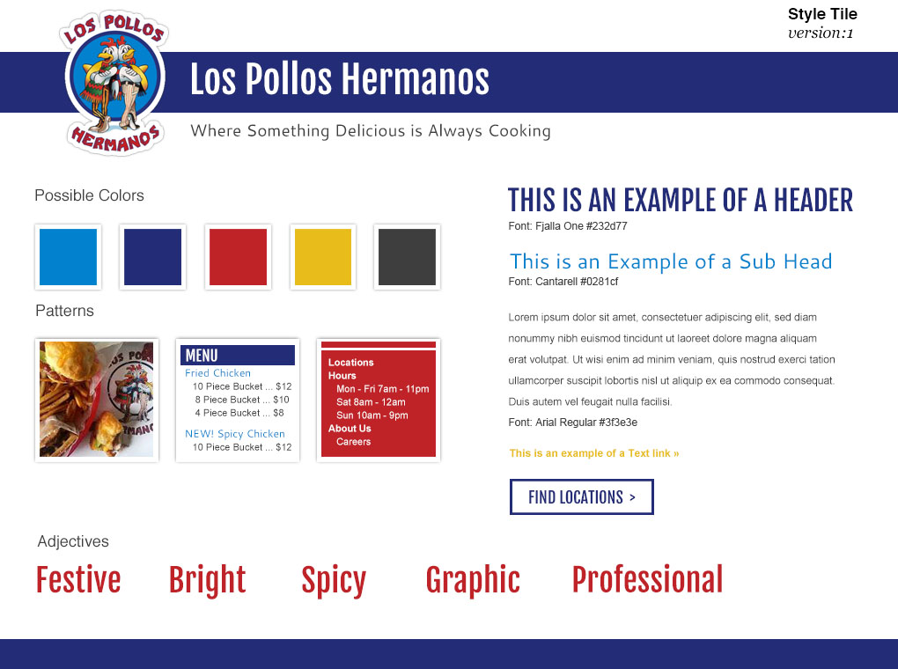

I developed the responsive website for a the infamous fictional restaurant in Breaking Bad. I made a style tile to create the look and feel for the site. Their logo inspired most of my design. I focused on bright, bold colors and blocky elements as the main elements of my theme. To develop the site, I used HTML5, CSS, and JS/jQuery plugins. I tried to keep the structure simple to focus on bold colors and the content.
Visit Site